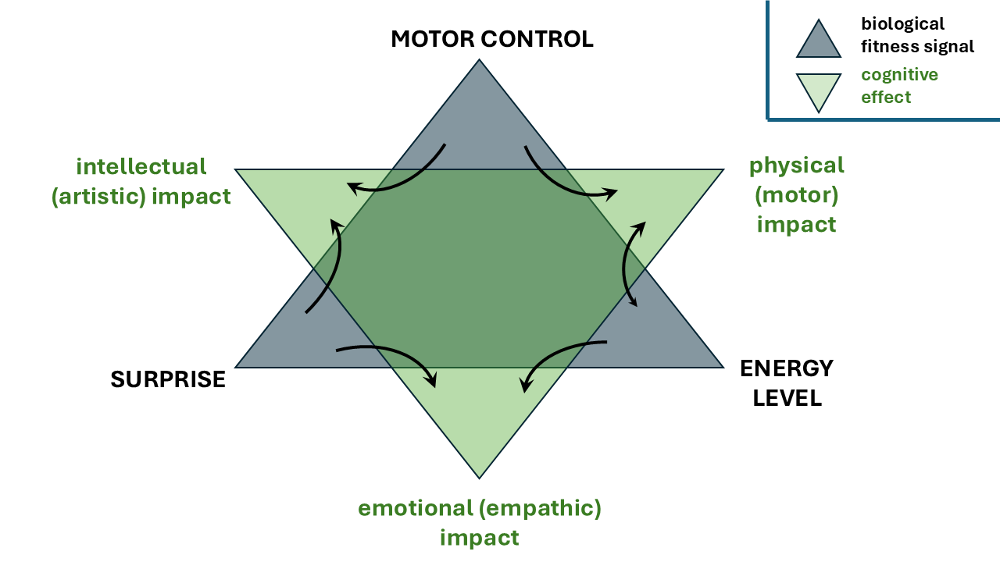
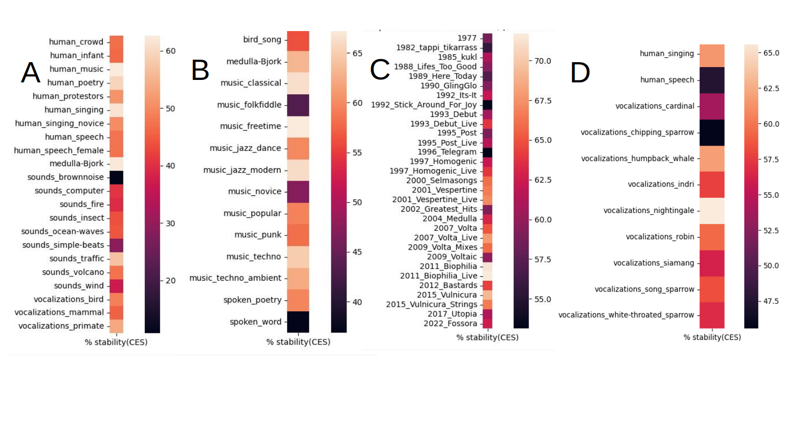

POPSTAR - software for detecting attention signaling in music and other sounds
POPSTAR is developed by Dr Gregory A. Babbitt (Bioinformatics) and Dr. Ernest P Fokoue (mathematics) and students at the Rochester Institute of Technology in Rochester, NY USA.
In a world where people's attention is becoming increasingly monetized and exploited, it is important to explore the physical and biological origins of attentive behavior. Pop stars and their cultural predecessors or analogs (i.e. shamans, gurus, orators, preachers, teachers, politicians, sports figures etc) all capture popular attention through their behavior. So the underlying power they hold over us makes them a very interesting subject of scientific study. POPSTAR software is a python-based user interfaced, machine learning assisted statistical analysis for detecting attention signaling in .wav or .mp3 sound files. It is designed for exploratory analysis of sounds like music, speech, animal vocalization, and even nonbiological sounds.
The calculus of attention
From an evolutionary perspective, cognitive attention to other moving bodies is fundamental to almost all animal life. It arose as soon as predator-prey relationships and intraspecific conflicts over resources in the environment became manifest. We propose a simple calculus to describe an observer's attention to the motion of other bodies. In this calculus, the main function f(x) describes the position (and control of position) that an observed body maintains. Its first derivative f'(x) describes the motion and energy it commands in both space and time. This includes both its kinetic and potential energy as manifested by its velocity and size, respectively. Its second derivative f"(x) describes its acceleration and deceleration which an observer must attempt to predict. The observer's incomplete ability to make this prediction results in an element of surprise which can be mathematically described via classic concepts of entropy and information content.
The attention to display
We propose that most behavioral displays in the animal (and human) realm have evolved to signal Darwinian fitness in terms of this calculus of attention to motion. Because behavioral display is used to choose mates and resolve conflicts without needing to resort to combat (i.e. graded aggression) they must contain honest signals of an individuals ability to control position, command energy, and tactically maneuver elements of their body in time and space. Common cheating of these signaling systems leads to the evolution of displays that grow in multivariate complexity over evolutionary time as long as resource supplies will still allow.
Music and dance as fitness display
In our research, we conjecture that music and dance (especially popular music) is in part, a group coordinated display of these features related to the calculus of attention. In this sense, pop stars must be rather necessary to the functioning of our society, otherwise we would not give them the attention we do. While pop stars have many sides to their personas, and while the human cultures from which they emerge are equally as complex, in our research we wonder if there exists some commonality to how they manage sound and motion to captivate our attention through a balance of various elements of control, energy and surprise. We can analyze sound itself for these features using a variety of methods described below.
A biopsychological model of attention
Our "popstar model" depicted here is a biopsychological model that proposes that our perceived musicality of certain sounds relies upon an underlying balance of acoustic signals that convey strong motor control (through control of pitch, timing and harmonics), high energy and dimension (through amplitude modulation, tempo, and reverberation), and a lot of surprise (through variation and complexity). This balance is represented by the gray triangle in the model. The inverted green triangle represents how these Darwinian fitness signals affect our cognition in a physical, emotional, and intellectual space. This model cojectures that the popular music that captivates the attention of a large majority of us is created by a balance of signaling in control, energy and surprise. It also creates a psychological balance in the physical, emotional, and intellectual space of the mind.
Musical genres under the popstar model
Interestingly, the "popstar model" would seem to well describe the different feelings most of us have when listening to different kinds of music in different contexts. The plot above shows how accentuating one or two different aspects of the calulus of attention creates psychological affects relevent to how we generally would describe feeling when listening to music in different genres and contexts.
Read the full paper here
Babbitt G.A. Fokoue E. P. 2025. An ancient evolutionary calculus for attention signaling retained in modern music. link to the bioRxiv
Example output
The POPSTAR software takes any sound file (.mp3 or .wav) and extracts features of control, energy, and surprise as they change over time. We represent these using both a dynamic trajectory on a ternary plot, as well as a dynamic Chernoff face representation where dimensions of the ears/nose represent various features of control, dimensions of the mouth and eyebrows represent features of energy, and dimensions of the eyes represent features of surprise. The pop song being analyzed here is a very popular fan remix of Bjork's recent release Atopos (from the album Fossora) posted by Ken Ubr to YouTube at https://www.youtube.com/watch?v=G_NYEASjZ1s&list=RDG_NYEASjZ1s
Chernoff face detail
Eye height = note variability index (derived from spectral cross-correlation)
Eye width = Lempel-Ziv complexity (derived from substring counts)
Pupil area = Complexity Index (derived from refined multi-scale entropy)
Eyebrow slant level = tempo (beats per minute)
Mouth height = amplitude volume
Mouth width = sound size or ambient dimension (derived from 1st order autocorrelation)
Ear height = fundamental frequency (f0) control or control of pitch
Ear width = evenness or control of beat intervals (derived from sums of square differences)
Nose slant = level of harmonic energy or number of harmonic frequencies (fN)
our software
POPSTAR was developed in python 3.11 and additionally requires a few python packages to also be nstalled. The methods and software is offered freely (without guarantee) under GPL 3.0 and was developed by Dr. Gragory A. Babbitt, Dr. Ernest P. Fokoue and students at the Rochester Institute of Technology between 2024-2026.
implementation
POPSTAR offers an easy graphical user interface (python popstar.py)
POPSTAR: python module dependencies (PyQt5, numpy, scipy, pandas, multiprocess, scikit-learn, scikit-fda, matplotlib, statsmodels, seaborn, plotnine, progress, librosa, soundfile, pydub, moviepy==1.0.3 to avoid recent bug, hurst, EntropyHub, python-ternary, opencv-python, yt-dlp) NOTE: for best results, the CPU on the computer should support at least 4 cores.
QUICK START (Linux or Mac terminal, or Windows cmd):
pip3 install PyQt5, numpy, scipy, pandas, etc.
unzip our download folder, add files to be analyzed (.wav or .mp3)
python3 popstar.py
on GUI, enter file or folder to analyze, select sound-type (self=single file, music, or other), click buttons in numbered order on the user interface
NOTE: we highly recommend building this within a unique conda environment
large-scale validation
POPSTAR uses a permutation algorithm to measure stability of sound in the space of CES (control, energy, and surprise). (A) Observed trajectories (blue) are shuffled (yellow) and (B) resulting step ditributions can be compared and classified via machine learning (random forest and FDA clustering)
Here we demomostrate relationships in CES stability (i.e. fitness display) across (A) natural sounds, (B) music genre, (C) Icelandic pop start Bjork's career discography, and (D) a variety of bird and primate vocalizations. CES stability ranges from 0% in brownian noise to >60% in music and some other animal vocalizations such as nightingales and humpback whales.
Bohemian Rhapsody
We used POPSTAR to compare live renditions of the most common karaoke / talent show song Bohemian Rhapsody by Queen
We can see that novice attempts at it are hit or miss compared to the infamous Live Aid 1985 performance. Notice below that more expert renditions have much shorter and intentional trajectory movements on the POPSTAR ternary plots.
Freddie Mercury at Live Aid 1985
a wonderful child rendition - viral on YouTube
a drunken karaoke at a wedding
Do you think popular music contains ancient fitness signaling as we have described here? Download POPSTAR and explore!